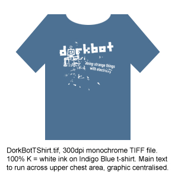
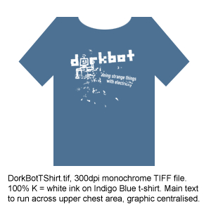

people doing strange things with electricity


We're very excited to present this exclusive artwork by Adrian Ward of signwave. He's designed it so the little flecks of ink will rub off with use, leaving you with an individual tshirt co-designed by your very own body. Thanks, Adrian!
Contact your local dorkbot community to see if anyone is going to print up a batch, or print your own using the files below:
DorkBotTShirt.tif (300 DPI TIFF)
DorkBotTShirt_reverse.tif (300 DPI TIFF reversed for iron-on transfer)
DORKBOT T-SHIRTS FOR SALE!!!
Want to purchase a dorkbot t-shirt? dorkbot t-shirts are now available online, via dorkbot-nyc's longtime host, Location One (a non-profit gallery in SOHO). t-shirts also for sale at the monthly dorkbot-nyc meetings. All profits from t-shirt sales go to support Location One's programs.
*** purchase dorkbot t-shirts online ***
And here's a hires version of the dorkbot logo for all your home printing needs:
dorkbot_yellow_blue.tif (300 DPI TIFF)
dorkbot_yellow_blue.tif (300 DPI TIFF reversed for iron-on transfer)